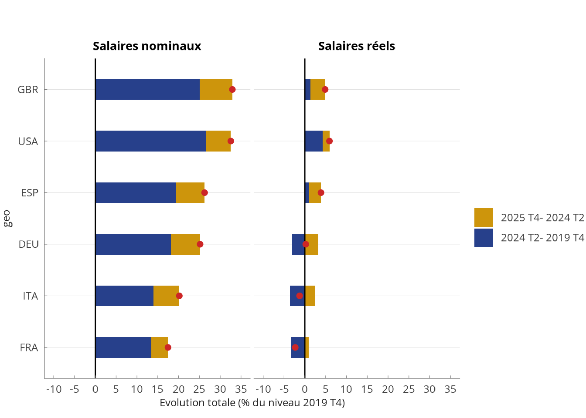

Partie finances publiques du PB inter
La nécessité de faire face aux chocs successifs de la pandémie puis des hausses de prix énergétiques ont provoqué des réactions vigoureuses de la part des gouvernements (Figure 1). En 2023, les déficits étaient donc plus élevés qu’avant les crises, malgré des différences importantes entre pays : par exemple, les Etats-Unis ont affiché le déficit le plus élevé en 2023 malgré leur situation d’exportateur net d’énergie ; la dégradation des finances italiennes s’explique en partie par l’ampleur des mesures prises en réponse à l’augmentation des prix de l’énergie, mais aussi par une perte de contrôle sur le dispositif du “Superbonus”1.
Sur la période 2023-2025, les économies avancées devraient donc connaître une amélioration de leurs soldes publics. Dans une certaine mesure, cette évolution est la conséquence directe de la stabilisation des prix de l’énergie, qui amène les gouvernements à mettre fin à leurs mesures de soutien dès 2024. D’autre part, au sein de la zone euro, la suspension des exigences budgétaires décidée pour permettre aux Etats de répondre aux crises se termine en 2024, au moment où les réformes adoptées vis-à-vis du cadre de gouvernance économique entrent en vigueur : la France et l’Italie en particulier sont visées par des procédures de déficit excessif. Les principales économies européennes mettraient en oeuvre des politiques de consolidation budgétaire structurelle en 2025 : 0.9% du PIB en Italie (0.5% en excluant l’arrêt du Superbonus), 0.7% en Allemagne, et environ 0.5% en Espagne et en France. Les Etats-Unis verraient leur déficit se réduire, principalement grâce à un réalignement de l’évolution des recettes sur celle du PIB ; à ce stade, malgré des différences marquées en termes de la nature des mesures proposées, aucun des deux candidats à l’élection présidentielle n’ont proposé de programme structurel visant à réduire les déficits.
Salaires

Footnotes
Adopté en 2020 comme mesure de relance, le Superbonus consistait initialement en un crédit d’impôt de 110% pour des rénovations de bâtiments à des fins d’efficience énergétique. Le coût total du dispositif depuis 2020 serait de 123 milliards d’euros, contre une estimation ex-ante par le gouvernement italien de 36.5 milliards.↩︎